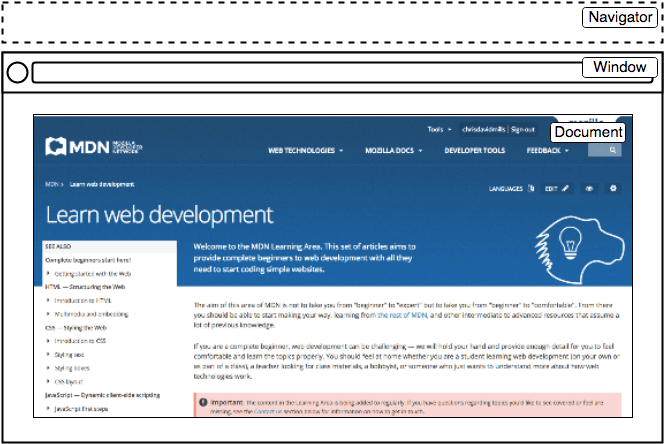

JS IV
Today
- Asynchronous JS (
asyncandawait) - Adding and removing DOM nodes
- Keyboard events
- Assignment 3
Recap from last class
- Event handling
- Asynchronous JS
- Fetching resources
Handling events
- To handle an event
- Attach an event listener to an element
- Using
addEventListener()
- Using
- When an event is fired
- The event listener will be called
- Attach an event listener to an element
Handling events
const button = document.querySelector("button");
button.addEventListener("click", (event) => {
console.log("clicked!")
console.log(event);
});The event object
Contains useful information
const button = document.querySelector("button");
button.addEventListener("click", (event) => {
console.log("clicked!")
console.log(event);
});The event object
button.addEventListener("click", (event) => {
event.target.style.color = "purple";
console.log(event);
});
target points to source of the event
Asynchronous JS
Resources
JS is single-threaded
Programs can only do one-thing at a time
Long-running tasks will block interactions
Asynchronous programming
Don’t wait for a long-running task to complete unlike synchronous programming
Instead, provide a callback function
When the task is completed, it will be called with the result
Conceptually, similar to event handling
- ‘callback’ function to click event
Promise
For asynchronous JS programming
Proxy for values not necessarily known yet
3 possible states in a
Promise- pending: initial state, neither fulfilled nor rejected.
- fulfilled: completed successfully
- rejected: failed
Promise
- It has a
thenmethod, which allows attaching functions - These functions will be called after the task has completed
- when it reaches “fulfilled” or “rejected” states
- You can provide functions for different states
onSuccessonError
Fetching resources
Needs asynchronous programming
- Retrieving data from server can take time
- We don’t want to block everything in the mean time
fetchAPI streamlines these steps- Uses
Promise - Documentation
- Uses
fetch
- Takes an argument
- Path to resource
- Returns a
Promise - Use
thenfunction to:- Attach a function to process the data
- Optionally, attach a function to handle errors
fetch
function onSuccess(response) {
console.log("Success!" + response.status);
}
function onError(error) {
console.log('Oh no! Error: ' + error);
}
fetch('hcdd-340.txt')
.then(onSuccess, onError)
Promises for asynchronous programming
Shorthand using an anonymous function
const url = "colleges.json"
const fetchPromise = fetch(url);
console.log(fetchPromise);
fetchPromise.then((response) => {
console.log(`Received response: ${response.status}`);
});“Asynchronicity is contagious”
- A function must be asynchronous, if
- it calls an asynchronous function
- uses return values from an asynchronous function
You can chain Promises to process data
fetchPromise
// if successful, then get `json` data
.then((response) => response.json())
.then((data) => {
console.log(data[0].name); // `then` for second promise
});Error handling in Promise
Handling HTTP error codes
fetchPromise
.then((response) => {
if (!response.ok) {
throw new Error(`HTTP error: ${response.status}`);
}
return response.json();
})
.then((data) => {
console.log(data[0].name);
})
.catch((error) => {
console.error(`Unable to fetch: ${error}`);
});
Today
- Asynchronous JS (
asyncandawait) - Adding and removing DOM nodes
- Keyboard events
- Assignment 3
Todo
- Open Activity 15
- Update
main.js - We are trying to access Camera
- You will have to attach success and error functions in
main.js
- You will have to attach success and error functions in
Hints
thenin aPromisetakes two functions
Today
- Asynchronous JS (
asyncandawait) - Adding and removing DOM nodes
- Keyboard events
- Assignment 3
async and await
Instead of using then() method
async function getData() {
const url = "colleges.json"
const response = await fetch(url);
console.log(`Received response: ${response.status}`);
}async and
await
async function getData() {
const url = "colleges.json"
const response = await fetch(url);
console.log(`Received response: ${response.status}`);
}async marks that it is an asynchronous function
async and
await
async function getData() {
const url = "colleges.json"
const response = await fetch(url);
console.log(`Received response: ${response.status}`);
}await will cause the function to ‘freeze’ till the
Promise is resolved
async and
await
const url = "colleges.json"
const fetchPromise = fetch(url);
fetchPromise
.then((response) => response.json())
.then((data) => {
console.log(data[0].name);
});==
const getData = async () => {
const url = "colleges.json"
const response = await fetch(url);
const data = await response.json()
console.log(data[0].name)
}async and
await
const getJson = async (url) => {
const response = await fetch(url);
if (!response.ok) {
throw new Error(`Error! ${response}`)
}
const data = await response.json()
console.log(data[0].name)
return data;
}// Calling it from another `async` function
try {
let colleges = await getJson("colleges.json");
} catch(error) {
console.error(error);
}Todo
- Open Activity 15
- Update
main.js - We are trying to access Camera
You will have to attach success and error functions inmain.js- Use
asyncandawait
Today
- Asynchronous JS (
asyncandawait) - Adding and removing DOM nodes
- Keyboard events
- Assignment 3
DOM
index.html
from the last class activity

DOM
Each entry in the tree is a
node
- Root node
- Top node (
HTML)
- Top node (
- Parent node
- Child node
- Descendant node
- Sibling node
We can add and remove nodes using JS
Adding a new node
3 steps
- Create a node
- Set values and attributes
- Attach it to the DOM tree
Creating a node
createElement()
const newDiv = document.createElement("div");
const p = document.createElement("p");String argument specifying the types of element
Creating a text node
createTextNode()
const newText = document.createTextNode("HCDD 340");String argument for the text
Adding a new node
3 steps
- Create a node
- Set values and attributes
- Attach it to the DOM tree
Setting attributes
setAttribute()
const p = document.createElement("p");
// set id
p.setAttribute("id", "new-id");
// setting css class
p.setAttribute("class", "large-text");
Two arguments: name and value
Setting class
attribute
Multiple options (examples)
const div = document.createElement("div");
div.className = "foo";
// <div class="foo"></div>
// add 3 classes
div.classList.add("foo", "bar", "baz");
// removes two classes
div.classList.remove("foo", "bar");
// if visible is set remove it, otherwise add it
div.classList.toggle("visible");Adding a new node
3 steps
- Create a node
- Set values and attributes
- Attach it to the DOM tree
appendChild()
const sect = document.querySelector("section");
const para = document.createElement("p");
// add at the end of the section
sect.appendChild(para);Appends a node to the parent
insertBefore()
<div id="parent">
<span id="child">foo</span>
</div>// Create a new, plain <span> element
const sp1 = document.createElement("span");
// Get the reference element
const sp2 = document.getElementById("child");
// Get the parent element
const parentDiv = sp2.parentNode;
// Insert the new element into before sp2
parentDiv.insertBefore(sp1, sp2);The new node will be placed before a reference node
after()
let container = document.createElement("div");
let p = document.createElement("p");
container.appendChild(p);
let span = document.createElement("span");
p.after(span);
// "<div><p></p><span></span></div>"
Insert the node after a given node
after() for text
node
let container = document.createElement("div");
let p = document.createElement("p");
container.appendChild(p);
p.after("Text");
// "<div><p></p>Text</div>"“Strings are inserted as equivalent Text nodes”
Removing elements
removeChild()
<div id="parent">
<div id="child"></div>
</div>const parent = document.getElementById("parent");
const child = document.getElementById("child");
const throwawayNode = parent.removeChild(child);Removes the child node from the parent
Removing elements
const node = document.getElementById("child");
node.parentNode.removeChild(node);parentNode points to the parent
Todo
- Open Activity 16
- Update
main.js
Hints
Focus on adding elements first
- We are adding
lielements- What are the components?
Hints II
Enable deletion
- Which element should have the
clickevent handler?
Todo
- Open Activity 17
- Update
main.js- Add nodes when a button is clicked
- see
output.htmlfor the final outcome
Hints
Start with Overview
section
- Update
addOverviewContentinmain.js - 3 elements
- Image
H2- Text
- What’s the parent root for these elements?
Hints II
Header
- Update
addHeaderContentinmain.js - What are the components?
Hints III
Objective
- Update
addObjectiveContentinmain.js - Two components
H2list
- What’s the parent element?
- How would you add the new parent element?
Today
- Asynchronous JS (
asyncandawait) - Adding and removing DOM nodes
- Keyboard events
- Assignment 3
Keyboard events
- To get text entered by your user, we usually rely on button clicks (e.g., “Submit”)
- Button click indicates user is done with text entering
- Then, we can extract the text
<input type="text" name="module" id="module">
<button id="btn_add">Add a module!</button>const addModule = (event) => {
const input = document.querySelector('input');
const moduleName = input.value;
};However, some use cases require handling keyboard events directly (e.g., games, shortcuts)
Keyboard events
- keydown
- keyup
- The
eventobject contains:key: value of the key pressedctrlKey:true, ifCtrlwas activeshiftKey:true, if theShiftkey was activemetaKey:true, if the meta key was active (⌘ in Mac, ⊞ in Windows)
Todo
- Open Activity 18
- What happens if you press the “v” key?
Keyboard events
window.addEventListener("keydown", event => {
if (event.key == "v") {
document.body.style.background = "violet";
}
});
window.addEventListener("keyup", event => {
if (event.key == "v") {
document.body.style.background = "";
}
});
“Page turns violet when you hold the V key”
Which element is the event listener?
window.addEventListener("keydown", event => {
if (event.key == "v") {
document.body.style.background = "violet";
}
});
window.addEventListener("keyup", event => {
if (event.key == "v") {
document.body.style.background = "";
}
});
window contains
the DOM document

window makes items globally available (functions, event
handlers, objects)
Todo
- Log the key pressed down
- What happens when you press ‘Enter’, ‘Delete’, ‘Tab’?
Todo
- Open Activity 18
- The balloon should:
- Inflate 20% when ⬆️ is pressed
- Deflate 20% when ⬇️ is pressed
Hints
- What does the console show when ⬆️ and ⬇️ is pressed?
style.fontSizewill change font for a given element- Remember to include the unit (e..g,
px,rem,em)
- Remember to include the unit (e..g,
Assignment 3
- Due next Thursday (10/16)
- Details